Back to formal experimentBeyond cats and dogs
Twenty retained Animals-10 probes, shown descriptively. All binary KNN predictions are forced cat/dog outputs; this is not calibrated OOD detection. Cosine, k=5, seed1001, 100 references per class. These images never enter formal metrics.
resnet18
animals_horse_000: source horse; forced prediction dog
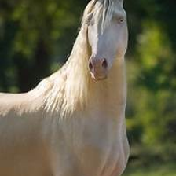
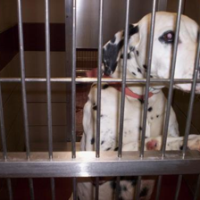
dog_0331
d=0.3406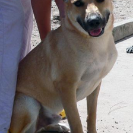
dog_0201
d=0.3418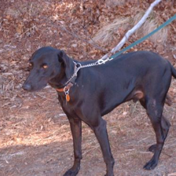
dog_0209
d=0.3480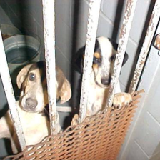
dog_0483
d=0.3573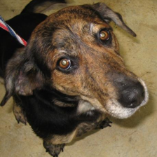
dog_0342
d=0.3637animals_horse_001: source horse; forced prediction dog
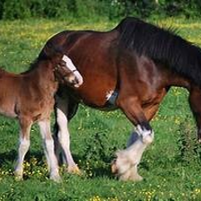
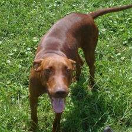
dog_0108
d=0.2616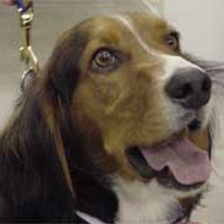
dog_0440
d=0.2840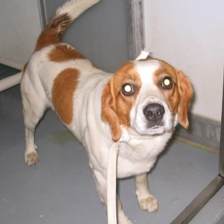
dog_0430
d=0.2950dog_0342
d=0.2958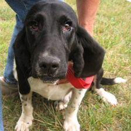
dog_0074
d=0.3009animals_horse_002: source horse; forced prediction dog
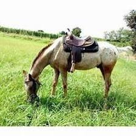
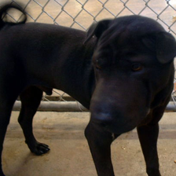
dog_0040
d=0.3040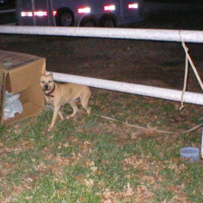
dog_0362
d=0.3151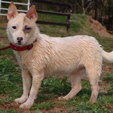
dog_0233
d=0.3171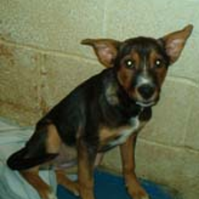
dog_0303
d=0.3190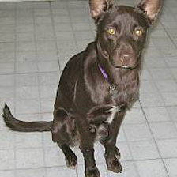
dog_0238
d=0.3194animals_horse_003: source horse; forced prediction dog
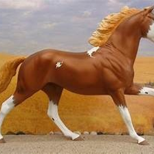
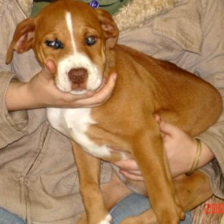
dog_0020
d=0.2710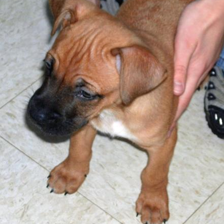
dog_0443
d=0.3082dog_0430
d=0.3106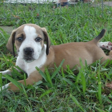
dog_0019
d=0.3129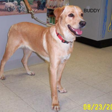
dog_0484
d=0.3204animals_horse_004: source horse; forced prediction dog
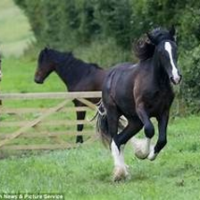
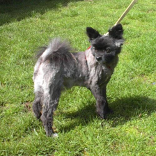
dog_0405
d=0.2516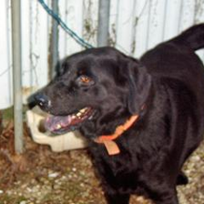
dog_0186
d=0.2537dog_0238
d=0.2599dog_0209
d=0.2610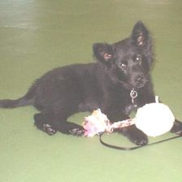
dog_0095
d=0.2616animals_sheep_000: source sheep; forced prediction dog
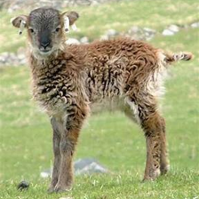
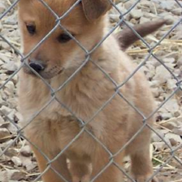
dog_0001
d=0.2804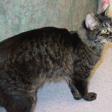
cat_0291
d=0.2820dog_0238
d=0.2912dog_0405
d=0.2919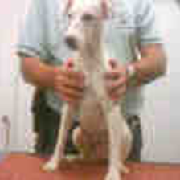
dog_0028
d=0.2968animals_sheep_001: source sheep; forced prediction dog
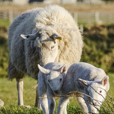
dog_0233
d=0.3182dog_0001
d=0.3232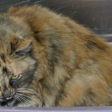
cat_0329
d=0.3245dog_0342
d=0.3376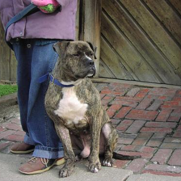
dog_0307
d=0.3402 animals_sheep_002: source sheep; forced prediction dog
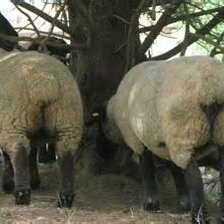
dog_0233
d=0.3733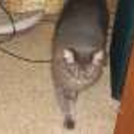
cat_0054
d=0.3903dog_0040
d=0.3918dog_0307
d=0.4064dog_0028
d=0.4074 animals_sheep_003: source sheep; forced prediction dog
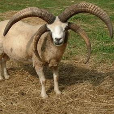
dog_0233
d=0.3173dog_0238
d=0.3198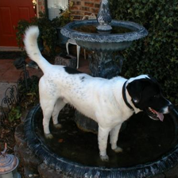
dog_0463
d=0.3226dog_0342
d=0.3377dog_0307
d=0.3400 animals_sheep_004: source sheep; forced prediction dog
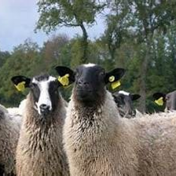
dog_0186
d=0.3338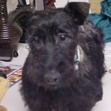
dog_0353
d=0.3441dog_0233
d=0.3554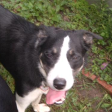
dog_0297
d=0.3571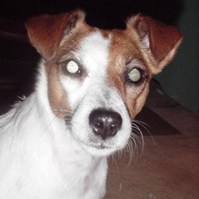
dog_0366
d=0.3629 animals_cow_000: source cow; forced prediction dog
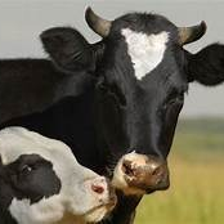
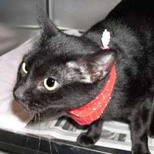
cat_0306
d=0.2712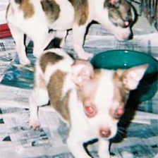
dog_0312
d=0.2775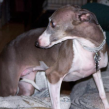
dog_0075
d=0.2814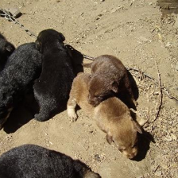
dog_0421
d=0.2825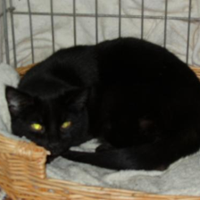
cat_0110
d=0.2906animals_cow_001: source cow; forced prediction dog
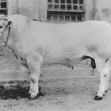
dog_0040
d=0.2999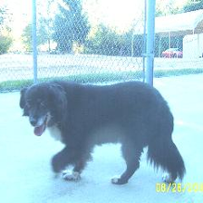
dog_0350
d=0.3282dog_0362
d=0.3370dog_0238
d=0.3442dog_0307
d=0.3459 animals_cow_002: source cow; forced prediction dog
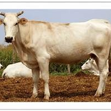
dog_0233
d=0.3000dog_0062
d=0.3066dog_0040
d=0.3177dog_0004
d=0.3292dog_0256
d=0.3319
animals_cow_003: source cow; forced prediction dog
dog_0463
d=0.3137dog_0074
d=0.3224dog_0015
d=0.3261dog_0028
d=0.3283dog_0489
d=0.3290
animals_cow_004: source cow; forced prediction dog
dog_0238
d=0.2666dog_0040
d=0.2830dog_0362
d=0.3114dog_0253
d=0.3153dog_0209
d=0.3198
animals_elephant_000: source elephant; forced prediction dog
dog_0040
d=0.3316dog_0304
d=0.3319dog_0209
d=0.3453dog_0238
d=0.3483dog_0425
d=0.3533
animals_elephant_001: source elephant; forced prediction dog
dog_0040
d=0.2600dog_0238
d=0.2882dog_0372
d=0.3114dog_0398
d=0.3120dog_0350
d=0.3233
animals_elephant_002: source elephant; forced prediction dog
dog_0238
d=0.2778cat_0306
d=0.3082cat_0054
d=0.3115dog_0040
d=0.3123dog_0004
d=0.3126
animals_elephant_003: source elephant; forced prediction dog
cat_0054
d=0.3526dog_0040
d=0.4017dog_0184
d=0.4106dog_0379
d=0.4131dog_0449
d=0.4183
animals_elephant_004: source elephant; forced prediction dog
dog_0233
d=0.3772dog_0256
d=0.3820dog_0304
d=0.3880dog_0040
d=0.3893dog_0062
d=0.4019
dinov2
animals_horse_000: source horse; forced prediction dog
dog_0028
d=0.6824dog_0233
d=0.7675dog_0355
d=0.8074dog_0396
d=0.8076dog_0256
d=0.8076
animals_horse_001: source horse; forced prediction dog
dog_0020
d=0.8235cat_0350
d=0.8248dog_0004
d=0.8445dog_0019
d=0.8447dog_0443
d=0.8469
animals_horse_002: source horse; forced prediction dog
dog_0405
d=0.8760dog_0071
d=0.8876dog_0233
d=0.8901cat_0455
d=0.8943cat_0451
d=0.8977
animals_horse_003: source horse; forced prediction cat
dog_0075
d=0.8425cat_0078
d=0.8650cat_0350
d=0.8729cat_0451
d=0.8864dog_0028
d=0.8867
animals_horse_004: source horse; forced prediction cat
dog_0350
d=0.8183cat_0350
d=0.8423cat_0079
d=0.8647cat_0488
d=0.8661dog_0405
d=0.8696
animals_sheep_000: source sheep; forced prediction dog
dog_0233
d=0.7596dog_0405
d=0.7734cat_0218
d=0.8037dog_0353
d=0.8076dog_0071
d=0.8153
animals_sheep_001: source sheep; forced prediction dog
dog_0233
d=0.6518dog_0489
d=0.7571dog_0256
d=0.7664dog_0421
d=0.7824dog_0028
d=0.8016
animals_sheep_002: source sheep; forced prediction dog
dog_0421
d=0.7323dog_0389
d=0.7797cat_0053
d=0.7867dog_0233
d=0.7989dog_0201
d=0.8196
animals_sheep_003: source sheep; forced prediction dog
dog_0483
d=0.7620dog_0363
d=0.8330dog_0247
d=0.8360dog_0430
d=0.8472dog_0257
d=0.8535
animals_sheep_004: source sheep; forced prediction cat
dog_0233
d=0.7408cat_0053
d=0.7842cat_0078
d=0.7949dog_0483
d=0.8044cat_0451
d=0.8056
animals_cow_000: source cow; forced prediction dog
dog_0074
d=0.8060dog_0256
d=0.8083dog_0141
d=0.8162dog_0044
d=0.8188cat_0139
d=0.8207
animals_cow_001: source cow; forced prediction dog
dog_0233
d=0.7764dog_0028
d=0.8204dog_0463
d=0.8327dog_0350
d=0.8556dog_0389
d=0.8599
animals_cow_002: source cow; forced prediction dog
dog_0233
d=0.6889dog_0028
d=0.7340dog_0256
d=0.7802dog_0355
d=0.8027dog_0486
d=0.8397
animals_cow_003: source cow; forced prediction dog
dog_0028
d=0.8103cat_0244
d=0.8231dog_0331
d=0.8264dog_0074
d=0.8266dog_0044
d=0.8285
animals_cow_004: source cow; forced prediction dog
dog_0075
d=0.7240dog_0028
d=0.7751dog_0486
d=0.8003dog_0020
d=0.8050dog_0256
d=0.8113
animals_elephant_000: source elephant; forced prediction dog
dog_0293
d=0.8380dog_0206
d=0.8702cat_0079
d=0.8876cat_0290
d=0.8927dog_0486
d=0.8950
animals_elephant_001: source elephant; forced prediction dog
dog_0040
d=0.8146dog_0206
d=0.8264cat_0367
d=0.8368cat_0211
d=0.8420dog_0209
d=0.8480
animals_elephant_002: source elephant; forced prediction dog
cat_0211
d=0.8657dog_0040
d=0.8956dog_0021
d=0.9056dog_0320
d=0.9080cat_0163
d=0.9086
animals_elephant_003: source elephant; forced prediction dog
dog_0342
d=0.8749dog_0206
d=0.8761dog_0021
d=0.8788dog_0304
d=0.8845dog_0430
d=0.8920
animals_elephant_004: source elephant; forced prediction dog
dog_0293
d=0.8100dog_0247
d=0.8719dog_0486
d=0.8747cat_0290
d=0.8765dog_0022
d=0.8811
clip
animals_horse_000: source horse; forced prediction dog
cat_0177
d=0.2535dog_0081
d=0.2652dog_0089
d=0.2747cat_0214
d=0.2876dog_0022
d=0.2878
animals_horse_001: source horse; forced prediction dog
cat_0401
d=0.3145cat_0106
d=0.3270dog_0206
d=0.3309dog_0022
d=0.3349dog_0449
d=0.3368
animals_horse_002: source horse; forced prediction dog
dog_0233
d=0.3408dog_0238
d=0.3410dog_0108
d=0.3425dog_0493
d=0.3464dog_0071
d=0.3483
animals_horse_003: source horse; forced prediction dog
dog_0089
d=0.2999dog_0081
d=0.3293cat_0177
d=0.3374cat_0214
d=0.3557dog_0206
d=0.3725
animals_horse_004: source horse; forced prediction dog
cat_0401
d=0.3127dog_0089
d=0.3224cat_0177
d=0.3342dog_0022
d=0.3372dog_0081
d=0.3409
animals_sheep_000: source sheep; forced prediction cat
cat_0326
d=0.2895cat_0246
d=0.2913dog_0206
d=0.3013cat_0214
d=0.3060dog_0449
d=0.3230
animals_sheep_001: source sheep; forced prediction cat
cat_0326
d=0.3327dog_0233
d=0.3580cat_0486
d=0.3583cat_0106
d=0.3721dog_0264
d=0.3820
animals_sheep_002: source sheep; forced prediction dog
dog_0421
d=0.3130cat_0401
d=0.3538dog_0233
d=0.3670dog_0022
d=0.3767dog_0307
d=0.3778
animals_sheep_003: source sheep; forced prediction dog
dog_0022
d=0.3116cat_0177
d=0.3281dog_0233
d=0.3366dog_0366
d=0.3375dog_0021
d=0.3393
animals_sheep_004: source sheep; forced prediction dog
dog_0366
d=0.3813dog_0022
d=0.3865dog_0307
d=0.3928cat_0177
d=0.3931cat_0401
d=0.3955
animals_cow_000: source cow; forced prediction dog
dog_0081
d=0.3295dog_0052
d=0.3298dog_0021
d=0.3564dog_0440
d=0.3607dog_0366
d=0.3620
animals_cow_001: source cow; forced prediction cat
dog_0022
d=0.3366cat_0476
d=0.3370cat_0219
d=0.3487cat_0291
d=0.3757dog_0233
d=0.3762
animals_cow_002: source cow; forced prediction cat
dog_0022
d=0.3351dog_0233
d=0.3442cat_0219
d=0.3570cat_0476
d=0.3574cat_0367
d=0.3661
animals_cow_003: source cow; forced prediction dog
dog_0081
d=0.3775dog_0052
d=0.3981dog_0022
d=0.3984dog_0440
d=0.4024dog_0366
d=0.4027
animals_cow_004: source cow; forced prediction cat
cat_0367
d=0.3111cat_0219
d=0.3166cat_0401
d=0.3200dog_0440
d=0.3255cat_0397
d=0.3282
animals_elephant_000: source elephant; forced prediction dog
cat_0326
d=0.3969dog_0421
d=0.3972dog_0089
d=0.4313cat_0329
d=0.4356dog_0201
d=0.4373
animals_elephant_001: source elephant; forced prediction dog
cat_0401
d=0.3815cat_0329
d=0.3927dog_0089
d=0.3940dog_0307
d=0.4023dog_0440
d=0.4072
animals_elephant_002: source elephant; forced prediction cat
dog_0089
d=0.3254cat_0177
d=0.3383dog_0081
d=0.3471cat_0401
d=0.3566cat_0329
d=0.3584
animals_elephant_003: source elephant; forced prediction cat
cat_0401
d=0.2968cat_0329
d=0.3067cat_0054
d=0.3119dog_0021
d=0.3205dog_0293
d=0.3306
animals_elephant_004: source elephant; forced prediction dog
dog_0421
d=0.3517cat_0401
d=0.3701cat_0329
d=0.3739dog_0089
d=0.3798dog_0201
d=0.3809